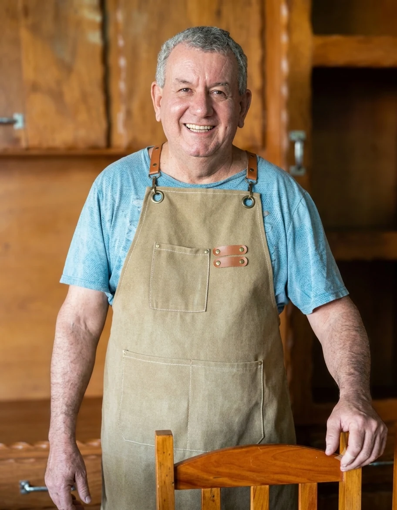

Famílias
Móveis para sala, quarto, cozinha e área externa que trazem calor e personalidade ao lar.

Tradição, artesanato e madeira de demolição em Terra Roxa e região desde 1997.
A MG Móveis Rústicos nasceu em 1997, no coração de Terra Roxa, Paraná, com a missão de transformar madeira de demolição em móveis que unem funcionalidade, beleza e durabilidade.
Hoje atendemos clientes de toda a região, incluindo Guaíra, Palotina, Toledo, Nova Santa Rosa, Assis Chateaubriand e cidades vizinhas.
Mauricio Dias Alves dá início à sua trajetória no ramo de móveis rústicos em Terra Roxa, no Paraná. Com trabalho artesanal e o uso de madeira proveniente de demolições, começa a produzir móveis que unem resistência, personalidade e o charme único da madeira de reaproveitamento.
Ao longo dos anos, a empresa conquista a confiança de famílias, propriedades rurais e comércios da região. A qualidade dos móveis, o cuidado em cada projeto e o atendimento personalizado fazem com que a reputação da marcenaria se fortaleça em Terra Roxa e nas cidades vizinhas.
Com o crescimento da demanda, a MG Móveis Rústicos amplia sua linha de produtos e passa a atender também restaurantes, chácaras, empresas e clientes que buscam projetos personalizados. Cozinhas, balcões, estantes e outros móveis são desenvolvidos sob medida, utilizando madeiras como peroba, canafístola e outras espécies selecionadas.
Atualmente, localizada na Rua Rio Grande do Norte, 470, em Terra Roxa — PR, a MG Móveis Rústicos continua transformando madeira em móveis únicos. Com quase três décadas de história, a empresa mantém a tradição do trabalho artesanal e combina experiência, qualidade e projetos personalizados para criar peças feitas para durar.

Fundador · Mestre Marceneiro · Terra Roxa, PR
Mauricio Dias Alves é marceneiro desde a juventude e uma das figuras mais respeitadas do ofício em Terra Roxa e região. Com mais de 20 anos de experiência, aprendeu cedo o valor de cada tábua, cada veio e cada junta — conhecimento que transformou a paixão pela madeira em uma empresa sólida e reconhecida.
Nascido e criado no oeste paranaense, Maurício cresceu observando a riqueza do campo e das madeiras nativas e, ao longo os anos, especializou-se no trabalho com madeira de demolição: peroba, canafistola e outras madeiras nobres. Seu olhar treinado consegue enxergar, em uma peça aparentemente comum, o potencial para um móvel único e duradouro.
Conhecido pelo capricho nos acabamentos e pelo trato direto com cada cliente, Maurício acompanha pessoalmente os projetos sob encomenda — desde a escolha da madeira até a entrega final. Para ele, cada móvel que sai da oficina carrega não apenas a madeira, mas também a história de quem o encomendou.
Hoje, à frente da MG Móveis Rústicos, continua dedicado ao artesanato que construiu ao longo de quase meio século, formando equipe e transmitindo o mesmo rigor e amor pelo ofício que o trouxe até aqui.
Cada peça é produzida manualmente, com atenção aos detalhes e acabamento impecável.
Utilizamos madeira de demolição selecionada, dando nova vida a materiais nobres.
Conversamos diretamente com o cliente para entender e executar cada projeto.
Orgulho de servir Terra Roxa e cidades vizinhas com qualidade e confiança.
Nossa oficina e fábrica ficam na Rua Rio Grande do Norte, 470, em Terra Roxa. É aqui que a madeira de demolição ganha forma: serrada, lixada, encaixada e finalizada por mãos experientes.
Contamos com ferramentas tradicionais para garantir precisão nos cortes e acabamentos, sem perder o caráter artesanal que nos define.
Visitas à oficina podem ser agendadas pelo WhatsApp. Será um prazer mostrar nosso processo de trabalho e as peças disponíveis para pronta entrega.
Agendar Visita
com soluções para diferentes perfis de cliente de Terra Roxa e cidades vizinhas, como: Guaíra – PR, Palotina – PR, Nova Santa Rosa – PR, Mercedes – PR, Maripá – PR, Santa Helena – PR, Toledo – PR, Assis Chateaubriand – PR, Francisco Alves – PR, Iporã – PR, Cafezal do Sul – PR, Mundo Novo – MS, Eldorado – MS e outras cidades num raio de 100 km.
Móveis para sala, quarto, cozinha e área externa que trazem calor e personalidade ao lar.
Recepções, salas de reunião e ambientes corporativos com móveis rústicos de impacto.
Mesas, bancos, cozinhas e áreas gourmet para aproveitar o campo com conforto e estilo.
Conjuntos de mesas e cadeiras resistentes, balcões e decoração que criam ambientes acolhedores.